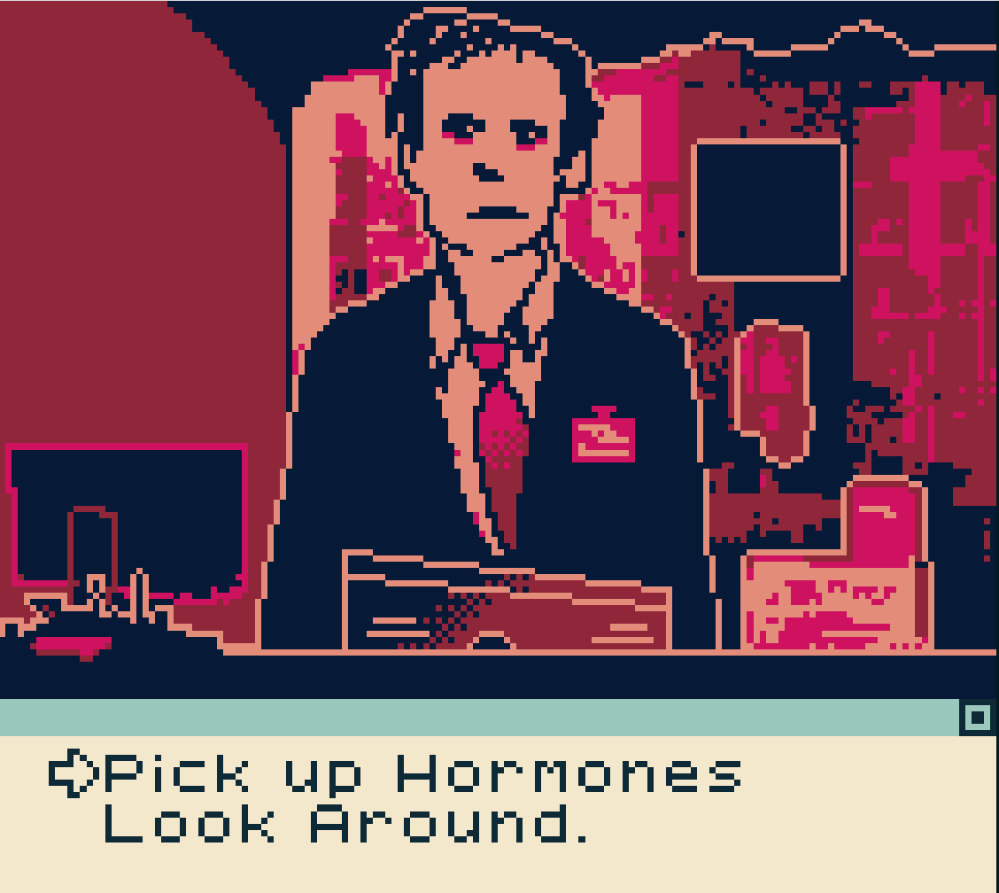
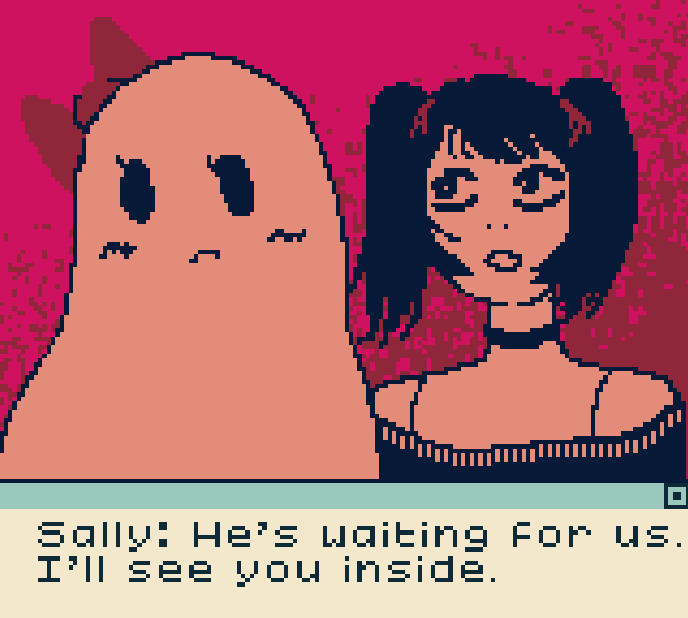
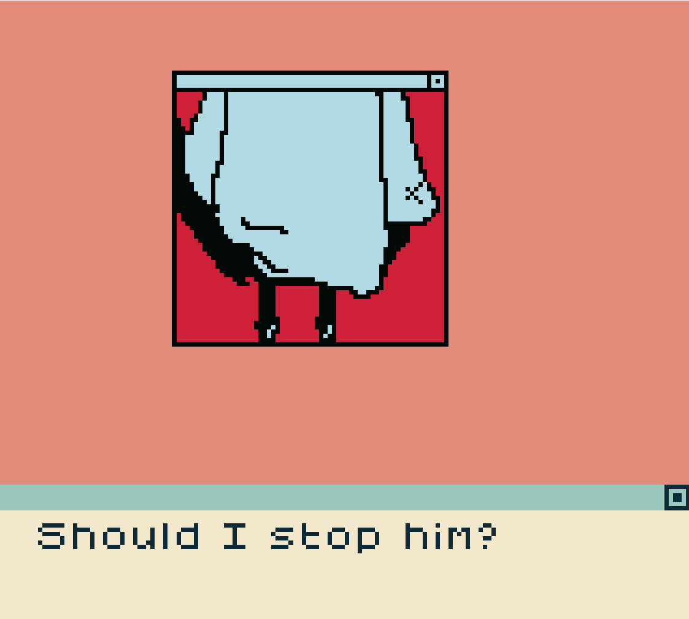

Games as an Art Medium
In his article “Games are Better Without Play”, Ian Bogost describes modern gameplay and creation as having an expeditiously naïve understanding of its goals as game. However, I think that he falls prey to the modernist condescension that modern art forms fall prey to. Video games, unlike what Bogost seems to defend, can be a work of art itself.
Video games establish themselves as an art medium through storytelling. Novels and films are arguably the best art pieces known to man, and both require a story to cohesively express ideas and messages. Games, like novels and films, offer complex and emotional stories that mirror those found in literature and film. “He Fucked the Girl Out of Me”, is an exemplary narrative of trans trauma. The game expresses ideas of the creator in a unique way allowing the player to engage and shape their conception of it. This is very similar to literature and film, both linear follow a narrative that shapes the readers/viewers conception of that story. Bogost argues that the need for storytelling within games is what makes them so redundant and unable to reach the standard of novels and film. However, I think this is where his analysis swims shallow. Storytelling in video games can be transformative. In games like “He Fucked the Girl Out of Me”, the storytelling is what makes it so unique to play. We are carried through the main narrative and explore the ideas that challenge preconceptions of the player. The game becomes an artistic expression through storytelling.
Aesthetics and visuals are an additional way that video games become an art form. One of my favorite games “Life is Strange”, contains visuals that make the story rather exceptional. I feel that the creators put effort into making their viewers have the best experience when playing the game. The visual elements become an integral part of the storytelling process. The game's distinct style, characterized by hand-painted textures and a dreamlike palette, contributes to the creation of an immersive and unique atmosphere. They shape the emotional experiences of the players. This is just one example of many games that wield their aesthetics and visuals in ways that create a unique experience for the user and shape experiences. Making the game a work of art in the end.
In her critically acclaimed game “He Fucked the Girl Out of Me”, Taylor McCue uses her own experiences as a trans woman and with trauma to piece together the narrative in the game. In the game she tells of her trauma, relaying her message that trauma changes and comes in shapes in forms for everyone. She wields the game to tell the players her ideas, beliefs about trauma, and experiences as a trans woman. This is where the game becomes an artistic outlet for McCue, as she uses the creation of the game as art. The game becomes a liberatory outlet to allow her to cope with her past. Bogost draws comparison to “What Remains of Edith Finch” and describes that the game acts to cast away modern need to tell a story. He fails to realize that these stories can be liberatory in retrospect and the narratives told have substantiative meaning.



The conglomeration of storytelling, aesthetics, and personal experiences within video games demonstrates their capacity to become art. Bogost incorrectly categorizes games as a means of advancing a certain prerogative and fails to understand that video games with narratives can offer a great purpose and even be a medium of art for both players and creator.